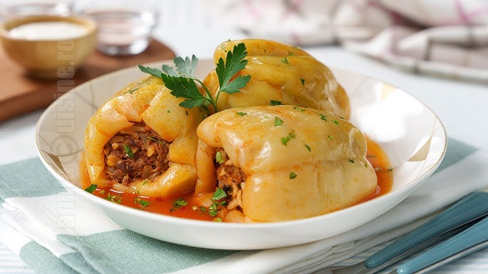

Ardei Umpluți

The Dish
Ardei Umpluți (stuffed peppers) is a classic Romanian dish that is a staple of any Romanian
grandma's kitchen.
The basic outline of the dish is simple:
- Bell peppers are stuffed with a mixture of rice, minced meat, and spices
- Then baked until tender
- The dish is often served with a side of sour cream or tomato sauce and crusty bread.
Ingredients
- 4 large bell peppers (any color)
- 1 cup rice
- 500g minced meat (beef, pork, or a mix)
- 1 onion, finely chopped
- 2 cloves garlic, minced
- 1 can diced tomatoes (400g)
- 1 teaspoon paprika
- Salt and pepper to taste
- Fresh parsley, chopped (for garnish)
- Olive oil (for drizzling)
Assembly
- Preheat the oven to 180°C (350°F).
- Cut the tops off the bell peppers and remove the seeds and membranes.
- In a large bowl, combine the rice, minced meat, chopped onion, minced garlic, diced tomatoes, paprika, salt, and pepper. Mix well.
- Stuff each bell pepper with the meat and rice mixture, pressing down gently to pack it in.
- Place the stuffed peppers upright in a baking dish. Drizzle with olive oil and add a splash of water to the bottom of the dish.
- Cover the dish with aluminum foil and bake for about 45 minutes.
- Remove the foil and bake for an additional 15 minutes, or until the peppers are tender and the filling is cooked through.
- Garnish with fresh parsley before serving.
Optionally, you can cook the dish in boiling water over a stove until the rice is soft for a more juicy texture.
Just make sure to add some tomato sauce for extra flavor.
Back to Homepage